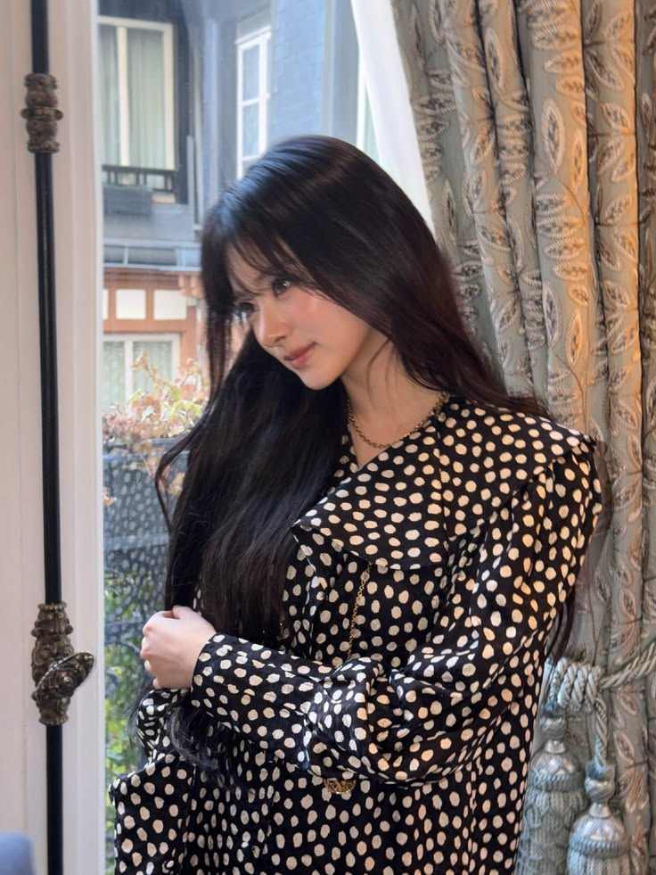
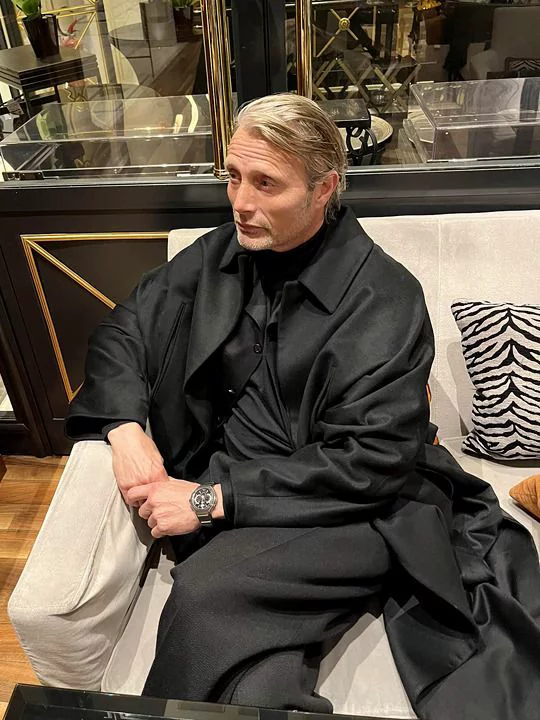

ARCHIVED RECORDS
"Some memories refuse to disappear."
SCROLL TO CONTINUE
People don’t disappear when they die. They disappear when nobody remembers how they laughed.
ARCHIVED NOTES:
Aku tidak pernah benar-benar tertarik pada kematian. Aku hanya penasaran bagaimana seseorang bisa hidup begitu lama tanpa pernah dipahami.
TANGGAL LAHIR: 10/04/2004
Restorator buku & arsip tua di perpustakaan kota
Awalnya hanya sering bertemu karena pekerjaan. Namun tanpa sadar, Mireille menjadi salah satu sedikit orang yang benar-benar memperhatikan kebiasaan kecil Naren.
"Kau menulis tentang orang mati seperti kau takut mereka kesepian."
TANGGAL LAHIR: 9/11/1998
Editor koran lokal
Atasan sekaligus orang yang paling sering menarik Naren kembali ke dunia nyata saat ia selalu tenggelam dalam pekerjaannya.
"Kau sadar pekerjaanmu hanya empat ratus kata, kan?"

TANGGAL LAHIR: 22/05/2005
Mahasiswa seni visual
Tetangga apartemen yang perlahan menjadi "suara" di kehidupan Naren yang terlalu tenang.
""Apartemen kak Naren bunyinya sedih banget."

TANGGAL LAHIR: TIDAK DIKETAHUI
Pemilik toko kaset & vinyl tua dekat pelabuhan
Semacam figur observer. Kadang memberi nasihat aneh yang baru masuk akal beberapa hari kemudian.
"Orang kesepian selalu memilih lagu yang sama tanpa sadar."
TANGGAL LAHIR: TIDAK DIKETAHUI
Tidak diketahui
Obsesi kecil yang perlahan berubah menjadi misteri terbesar dalam hidupnya.
"Semua orang meninggalkan jejak. Kau hanya belum tahu cara melihatnya."
If you're reading this,
the story never really ended.
NAREN awaits